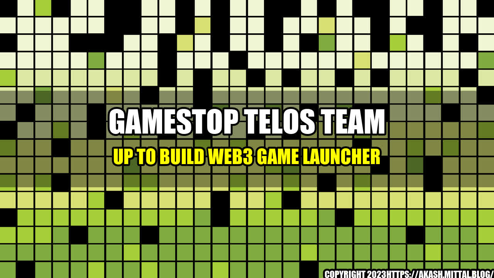

The Rise of Web3 and the GameStop-Telos Partnership

It's official - the world has entered a new era of internet technology. The Web 3.0 revolution is upon us, and it promises to change everything we know about the internet, from how we interact with it to how we do business on it. At the forefront of this revolution is blockchain technology and its various applications, including cryptocurrency and decentralized finance (DeFi). The gaming industry, too, is set to be disrupted by Web3, as more games integrate blockchain technology to create new and exciting experiences for players.
Seeing the potential of blockchain technology in the gaming industry, GameStop has teamed up with Telos, a blockchain solutions company, to build a new Web3 game launcher.
The GameStop-Telos Partnership: A New Era for Gaming
The Web3 game launcher developed by GameStop and Telos aims to revolutionize the way gamers play and interact with games. By leveraging blockchain technology, the game launcher will offer players a number of unique benefits, including:
- True ownership of in-game items: With blockchain technology, players can truly own and control the items they earn or purchase in-game. This means that they can sell or trade their in-game items for real money, or use them across different games and platforms without any restrictions.
- Improved security: The decentralized nature of blockchain technology makes it highly secure and resistant to hacks and cyber attacks. This means that player data and in-game items will be better protected from theft or fraud.
- Greater transparency and fairness: Blockchain technology enables transparent and decentralized governance, allowing players to have a say in how the game is run and how the rewards system is structured. This fosters a more engaging and fair gaming experience for everyone involved.
These benefits are just the tip of the iceberg when it comes to the potential of Web3 gaming. With GameStop and Telos leading the way, we can expect to see more and more games adopting blockchain technology and embracing Web3 principles.
Web3 Gaming's Potential
If you're still not convinced about the potential of Web3 gaming, here are some quantifiable examples that might change your mind:
- CryptoKitties: This popular blockchain game allows players to buy, sell, and breed digital cats using Ethereum cryptocurrency. In 2017, a single rare CryptoKitty sold for more than $170,000, demonstrating the potential for blockchain-based gaming to create unique and valuable in-game items.
- Decentraland: This virtual world game allows players to buy, sell, and build on virtual land using the MANA cryptocurrency. In 2020, LAND tokens (which represent virtual land in the game) saw a 1,000% increase in value, proving that blockchain-based gaming can create real economic value.
- Gods Unchained: This blockchain-based collectible card game has generated more than $7 million in revenue since its launch in 2019. By leveraging blockchain technology, Gods Unchained enables players to own and trade their cards as real assets, fostering a vibrant and engaged community of players.
Taking Web3 Gaming to the Next Level
The GameStop-Telos partnership is just the beginning of what promises to be an exciting new era for gaming. As more games adopt blockchain technology and integrate Web3 principles, we can expect to see even greater innovation and creativity in the gaming industry. So why not get involved and see what all the fuss is about?
In conclusion, the potential of Web3 gaming is nothing short of mind-blowing, and the GameStop-Telos partnership is leading the way. Look out for the launch of the new Web3 game launcher – it could be the start of a whole new gaming revolution.
- Blockchain technology and Web3 gaming can offer unique benefits to players, such as true ownership of in-game items, improved security, and greater transparency and fairness.
- There are already successful examples of blockchain-based gaming, such as CryptoKitties, Decentraland, and Gods Unchained, which offer valuable and engaging experiences for players.
- The GameStop-Telos partnership is a sign of the growing interest in Web3 gaming and could lead to a revolution in the gaming industry.
Reference URLs:
Hashtags: #Web3 #Gaming #Blockchain #GameStop #Telos #CryptoKitties #Decentraland #GodsUnchained #TrueOwnership #Security #Transparency #Fairness #Innovation #Revolution
Category: Gaming/Blockchain/Technology
Curated by Team Akash.Mittal.Blog
Share on Twitter Share on LinkedIn